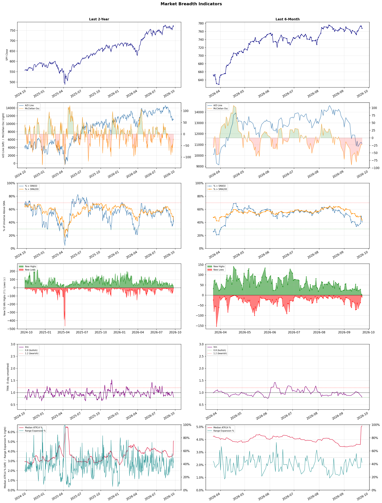

A daily market breadth and sector rotation report for active investors
| Item | Read |
|---|---|
| Regime | Defensive |
| Risk posture | Defensive |
| Universe | 1,322 stocks tracked · 1 new 52-week highs · 30 active swing setups |
| Breadth | only 40.8% of tracked stocks are above SMA50, new lows exceed new highs (9 vs 1), McClellan oscillator (breadth momentum) is negative at -22.9 |
| Leadership | Oil & Gas Refining & Marketing, Diagnostics & Research, and Health Information Services |
| Weakest groups | Gambling, Resorts & Casinos, and Leisure |
Use this report to prioritize research and chart review; validate entries, stops, liquidity, earnings, and risk before acting.
| Item | Read |
|---|---|
| Primary read | Defensive regime with Defensive risk posture. |
| Research queue | UGP, DINO, MPC, VLO, CSAN |
| Leadership focus | Oil & Gas Refining & Marketing, Diagnostics & Research, and Health Information Services |
| Caution list | Gambling, Resorts & Casinos, and Leisure |
| Review prompt | Check extension risk, chart location, fundamentals, valuation, and earnings before using any research row. |
| Item | Read |
|---|---|
| Primary read | 4 active risk warnings; use screen output as watchlist input only. |
| Bullish screens | AKAM, RXT, BB, WPM, NTRA |
| Bearish screens | HTFL |
| Alerts / levels | Automated trigger, stop, ATR, liquidity, reward/risk, and event-risk levels are pending future enrichment. |
| Review prompt | Open the linked chart, define trigger and invalidation, then check liquidity and event risk independently. |
Risk Posture: Defensive — screen backdrop favors caution; require independent risk review before new exposure
Metric context: McClellan below -50 = elevated selling pressure; below -100 = washout territory. Range Expansion = share of stocks with daily range above their 20-day average. Signal Density = share of tracked names appearing in signal screens.
| Breadth Date | % > SMA50 | % > SMA200 | New Highs | New Lows | McClellan | Median Range | Avg Range | Median ATR14 | Range Expansion | Signal Density |
|---|---|---|---|---|---|---|---|---|---|---|
| 2026-09-23 | 40.8% | 43.6% | 1 | 9 | -22.9 | 3.0% | 3.6% | 5.1% | 42.2% | 10.2% |

Prior comparison date: September 22, 2026
| Metric | Prior | Current | Change |
|---|---|---|---|
| Regime | Defensive | Defensive | unchanged |
| Risk Posture | Defensive | Defensive | unchanged |
| % > SMA50 | 38.4% | 40.8% | +2.4 pts |
| % > SMA200 | 49.0% | 43.6% | -5.4 pts |
| New Highs | 31 | 1 | -30 |
| New Lows | 32 | 9 | +23 |
Top-10 industries entering: Oil & Gas Integrated. Top-10 industries leaving: Medical Care Facilities. New multi-signal long setups: RUM, SVM, WPM. New multi-signal short setups: none.
| Status | Tickers | Read |
|---|---|---|
| Added | ACMR, AEHR, ANF, APH, AU, BB, BTE, CLS | New technical screen matches vs prior report. |
| Removed | AMD, CHTR, CMS, FIS, HYLN, MRNA, NEOG, NET | No longer present in today's technical screen matches. |
| Still Active | AKAM, ALAB, APPS, ARM, NTRA, OPK, RNG, RXT | Appeared in both current and prior reports. |
| Promoted | none | Model Screen Score improved by at least 15 points. |
| Downgraded | ALAB, APPS, ARM, NTRA, OPK, RNG | Model Screen Score declined by at least 15 points. |
| Direction | Industry | ETF | Prior Rank | Current Rank | Days | Rank Change |
|---|---|---|---|---|---|---|
| Rose | Semiconductor Equipment & Materials | SOXX | 83 | 11 | 7 | +72 |
| Rose | Semiconductors | SOXX | 80 | 10 | 35 | +70 |
| Rose | Capital Markets | KCE | 75 | 9 | 42 | +66 |
| Rose | Electronic Components | XLK | 70 | 8 | 35 | +62 |
| Rose | Agricultural Inputs | N/A | 84 | 25 | 42 | +59 |
Bull: The Semiconductor Equipment & Materials sector is experiencing rising relative strength due to robust demand for chip manufacturing equipment, as evidenced by the significant gains in stocks like Lam Research and Applied Materials, which climbed 5% and 4% respectively. This surge indicates a positive outlook for the semiconductor supply chain, driven by increasing investments in AI and data centers, despite bearish sentiment from investors like Michael Burry, who is shorting specific stocks like Micron and Palantir. The overall momentum in chip equipment stocks suggests that the market anticipates a rebound in semiconductor demand, positioning the sector favorably against broader market trends.
Bear: While the recent gains in semiconductor equipment stocks like Lam Research and Applied Materials may suggest a positive outlook, it's crucial to consider that these movements could be driven by short-term trading dynamics rather than sustained demand. Michael Burry's significant short positions against Micron and Palantir highlight a growing concern about an impending down cycle in the semiconductor industry, driven by potential overcapacity, waning consumer demand, and rising costs, particularly in materials like copper. This suggests that the current relative strength may not be indicative of long-term health in the sector, as underlying fundamentals could deteriorate amidst broader economic challenges.
Verdict: The semiconductor equipment and materials sector is experiencing a rise due to strong demand driven by investments in AI and data centers, which is reflected in the stock performance of key players like Lam Research and Applied Materials. However, the key risk lies in the potential for overcapacity and declining consumer demand, as highlighted by bearish sentiment from investors like Michael Burry, indicating that the current momentum may not be sustainable in the long term. Investors should closely monitor macroeconomic indicators and industry fundamentals to assess the viability of this upward trend.
Sources: Yahoo Finance, Google News
Bull: The semiconductor sector is experiencing a rise in relative strength primarily due to a broader industry rebound, as indicated by headlines highlighting significant gains in stocks like Macom and Lattice Semiconductor amid a sector-wide rally. This resurgence can be attributed to increasing demand for chips driven by advancements in AI and data center technologies, as evidenced by the mention of companies skirting high copper prices for AI data centers, which underscores the critical role of semiconductors in powering these innovations. Additionally, despite bearish sentiments from investors like Michael Burry regarding specific stocks, the overall market dynamics suggest a recovery and optimism in the semiconductor space.
Bear: While the semiconductor sector may be experiencing a temporary rally, the bearish sentiment from prominent investors like Michael Burry, who is betting against key players like Micron and Palantir, raises significant concerns about the sustainability of this rebound. The potential for a chip down cycle, driven by oversupply and waning demand as companies adjust to high inventory levels, could overshadow the optimistic narratives surrounding AI and data centers. Furthermore, the recent gains in select stocks may not reflect a broad-based recovery but rather a few outliers benefiting from short-term market dynamics, leaving the overall sector vulnerable to a downturn.
Verdict: The semiconductor industry's recent rise is fundamentally driven by robust demand for chips, particularly fueled by advancements in AI and data center technologies, which are propelling stock gains for companies like Macom and Lattice Semiconductor. However, investors should remain cautious of the bear case, as the potential for a chip down cycle due to oversupply and high inventory levels could undermine this rebound, suggesting that a careful assessment of inventory and demand trends is essential for navigating the sector.
Sources: Yahoo Finance, Google News
Bull: The Capital Markets sector, represented by the SPDR S&P Capital Markets ETF (KCE), is likely experiencing rising relative strength due to a combination of bullish sentiment and strong performance indicators in the industry. Recent headlines suggest a positive outlook for capital markets, with J.P. Morgan highlighting four sectors primed for growth, which likely includes capital markets as investor confidence builds amid a midterm mindset shift in the U.S. stock market. Additionally, the focus on Interactive Brokers' stock performance indicates that key players in the sector are performing well, further attracting investment interest and driving the sector's upward momentum.
Bear: While the capital markets sector may exhibit rising relative strength, it is essential to consider the potential headwinds that could undermine this bullish sentiment. The recent decline in global AI stocks, coupled with calls from industry leaders for a slowdown in development, suggests a broader market uncertainty that could dampen investor confidence. Furthermore, the midterm mindset may lead to increased volatility as political dynamics shift, potentially impacting capital market performance and making it a less stable investment choice in the near term.
Verdict: The capital markets sector is likely experiencing rising relative strength due to increasing investor confidence fueled by positive performance indicators and bullish sentiment, particularly highlighted by J.P. Morgan's identification of growth sectors. However, the key risk lies in potential market volatility stemming from political shifts during the midterm elections and broader uncertainties from the recent decline in global AI stocks, which could undermine investor sentiment and impact performance. Investors should remain cautious and consider these risks when evaluating capital market investments.
Sources: Yahoo Finance, Google News
Bull: The Electronic Components sector is likely experiencing rising relative strength due to its resilience amidst broader market volatility, as evidenced by the mixed performance of major tech stocks like Alphabet and Microsoft. Additionally, the recent earnings reports from companies like Benchmark (NYSE:BHE) and Plexus (NASDAQ:PLXS) indicate strong performance within the sector, suggesting robust demand and operational efficiency that could attract investor interest even as other tech stocks face declines. This combination of solid earnings and sector-specific strength positions Electronic Components favorably compared to the broader technology landscape.
Bear: While the Electronic Components sector may show rising relative strength, this could be misleading as it may primarily reflect a flight to safety rather than genuine growth. The recent mixed performance of major tech stocks, coupled with broader market declines, suggests underlying volatility and uncertainty, which could lead to a correction in the sector. Furthermore, the earnings reports from Benchmark and Plexus, while seemingly positive, may not be sustainable in the face of potential supply chain disruptions and decreasing consumer demand as inflationary pressures continue to weigh on spending.
Verdict: The Electronic Components sector is likely experiencing rising relative strength due to its resilience in a volatile market, supported by strong earnings from companies like Benchmark and Plexus, which indicate robust demand and operational efficiency. However, investors should remain cautious of potential risks, including supply chain disruptions and decreasing consumer demand driven by inflationary pressures, which could undermine the sector's current performance. It is advisable to monitor these macroeconomic factors closely to assess the sustainability of the sector's growth.
Sources: Yahoo Finance, Google News
Bull: The Agricultural Inputs sector is experiencing rising relative strength primarily due to increasing demand for food production driven by global population growth and changing dietary preferences, as highlighted in The Motley Fool's article on top agriculture stocks for 2026. Additionally, the broader materials sector is gaining momentum, as noted by Seeking Alpha, suggesting that economic recovery and infrastructure spending are bolstering agricultural input investments, further enhancing the sector's attractiveness amid undervalued opportunities identified by Morningstar.
Bear: While the agricultural inputs sector may appear to be gaining momentum due to rising demand and broader economic recovery, several significant headwinds could undermine this bullish outlook. For one, the recent drop in CF Industries Holdings by 5.1% amid sector-wide selling suggests that investor sentiment may be shifting, potentially driven by rising input costs, supply chain disruptions, and geopolitical tensions affecting commodity prices. Furthermore, the long-term sustainability of food production growth may be challenged by climate change impacts, regulatory pressures, and shifting consumer preferences towards more sustainable practices, which could limit the profitability of traditional agricultural inputs.
Verdict: The agricultural inputs sector is likely moving upward due to heightened demand for food production fueled by global population growth and changing dietary preferences, alongside supportive economic conditions and infrastructure spending. However, key risks such as rising input costs, supply chain disruptions, and climate change impacts could significantly challenge profitability and investor sentiment in the long term. Investors should closely monitor these risks while considering opportunities in undervalued agricultural input stocks.
Sources: Google News
| Direction | Industry | ETF | Prior Rank | Current Rank | Days | Rank Change |
|---|---|---|---|---|---|---|
| Fell | Travel Services | N/A | 15 | 84 | 42 | -69 |
| Fell | Real Estate Services | N/A | 23 | 83 | 35 | -60 |
| Fell | Uranium | URA | 23 | 77 | 28 | -54 |
| Fell | Gambling | N/A | 33 | 87 | 7 | -54 |
| Fell | Restaurants | N/A | 33 | 82 | 35 | -49 |
Bear: While the bull analyst points to select outperformers as signs of potential within the Travel Services sector, the broader trend of declining relative strength indicates systemic issues that cannot be overlooked. Rising inflation and interest rates are not just short-term hurdles; they fundamentally alter consumer behavior, leading to decreased discretionary spending on travel. Furthermore, the focus on undervalued stocks may reflect a desperate search for value in a sector facing long-term headwinds, such as changing travel patterns, increased operational costs, and potential regulatory challenges, suggesting that the overall outlook for the travel industry remains bearish despite isolated success stories.
Bull: The Travel Services sector is experiencing a decline in relative strength primarily due to macroeconomic concerns, such as rising inflation and interest rates, which can dampen consumer spending on discretionary services like travel. Additionally, the headlines highlight a shift in investor focus towards undervalued stocks and specific outperformers like Marriott and Expedia, suggesting that while the overall sector may be struggling, select companies within it are being recognized for their potential, indicating a broader market rotation rather than a complete downturn in travel services.
Verdict: The Travel Services sector's decline is primarily driven by macroeconomic pressures, including rising inflation and interest rates, which are reducing consumer discretionary spending and altering travel behaviors. While select companies like Marriott and Expedia may show potential, the key risk is that these systemic issues could persist, leading to sustained lower demand and profitability across the industry. Investors should remain cautious and focus on companies with strong fundamentals and adaptability to navigate these challenges.
Sources: Google News
Bear: While the bull analyst attributes the decline in the Real Estate Services sector to investor anxiety over AI, the reality is that the sector is grappling with fundamental challenges that extend beyond market sentiment. The persistent rise in remote work trends and the oversupply of office space have created a structural shift in demand, leading to a long-term decline in occupancy rates and rental income, which AI alone cannot explain. Furthermore, the recent earnings reports from major players like CBRE and Cushman & Wakefield indicate that operational inefficiencies and declining profitability are significant issues that investors should be more concerned about than transient market fears.
Bull: The Real Estate Services sector is experiencing a decline in relative strength primarily due to heightened investor anxiety surrounding the potential impact of AI on various industries, including real estate, as highlighted by the "AI scare trade" reported by multiple outlets. This sentiment has led to significant sell-offs in office real estate stocks, as concerns about the future demand for office space and the broader implications of AI on the workforce have overshadowed the sector's fundamentals. Additionally, the underperformance of key players like CBRE Group and Cushman & Wakefield in recent earnings reports may have further contributed to the sector's negative momentum.
Verdict: The Real Estate Services sector's decline is primarily driven by fundamental challenges, including the sustained rise in remote work and an oversupply of office space, leading to long-term decreases in occupancy rates and rental income. While investor anxiety over AI's impact on the workforce is a notable concern, the key risk lies in the operational inefficiencies and declining profitability of major players like CBRE and Cushman & Wakefield, which suggest that structural issues in the market are more pressing than transient market fears. Investors should closely monitor these fundamental shifts and consider reallocating their portfolios accordingly to mitigate risks associated with the sector's ongoing challenges.
Sources: Google News
Bear: While the bull analyst attributes the recent decline in the uranium sector to market volatility and investor sentiment, the underlying fundamentals of the industry present significant headwinds that cannot be overlooked. The stark divide between profitable producers and loss-making developers underscores a troubling reality: many companies lack viable paths to profitability, and ongoing concerns about cash burn and project timelines, particularly for development-stage firms like NuScale and Oklo, raise serious doubts about their long-term viability. Furthermore, the recent volatility and mixed performance of key players suggest that investor confidence is waning, which could lead to a prolonged downturn in the sector as capital becomes increasingly scarce for companies that are not demonstrating clear paths to sustainable growth.
Bull: The recent decline in the relative strength of the uranium sector can be attributed to heightened volatility and investor sentiment shifts, as evidenced by the mixed performance of key players like NuScale Power and Oklo, which have experienced significant price fluctuations in response to market corrections and analyst downgrades. Additionally, the division between profitable uranium producers and loss-making developers has created uncertainty, leading to a cautious approach among investors, as highlighted by Piper Sandler's analysis and the overall sector correction. This uncertainty is further compounded by concerns over cash burn and project timelines, particularly for development-stage companies, which may deter investment in the sector despite the long-term bullish outlook for nuclear energy.
Verdict: The recent decline in the uranium sector is primarily driven by a widening gap between profitable producers and struggling development-stage companies, leading to investor caution amid concerns over cash burn and project timelines. The key risk highlighted by the bear thesis is that many firms lack clear paths to profitability, which could result in a prolonged downturn as capital becomes scarce for those unable to demonstrate sustainable growth. Investors should closely monitor the financial health and operational progress of companies in this space to identify potential opportunities while remaining wary of the broader industry's challenges.
Sources: Yahoo Finance, Google News
Bear: While the bull analyst points to macroeconomic factors as a primary concern, it's crucial to recognize that the gambling industry often thrives during economic recoveries, as consumers tend to increase discretionary spending on entertainment. Furthermore, the positive headlines regarding specific stocks like PENN and the surge in regional gaming suggest that there are pockets of strength and potential growth within the sector, which could mitigate broader economic fears. However, the overarching trend of declining relative strength indicates that these gains may not be sustainable in the face of persistent inflation and rising interest rates, which could ultimately constrain consumer spending and dampen the industry's overall performance.
Bull: The gambling industry is currently experiencing a decline in relative strength, likely driven by macroeconomic factors such as rising interest rates and inflation, which can dampen consumer discretionary spending. Additionally, while recent headlines highlight positive developments, such as Goldman Sachs' bullish rating on PENN and the resurgence in regional gaming, the overall market sentiment may be overshadowed by concerns over economic uncertainty and potential regulatory changes affecting the sector. This juxtaposition of optimism in specific stocks against broader economic headwinds contributes to the industry's relative weakness.
Verdict: The gambling industry's decline is primarily driven by macroeconomic pressures, including rising interest rates and inflation, which are constraining consumer discretionary spending. While there are pockets of strength, such as positive developments in specific stocks and regional gaming, the key risk is that sustained economic uncertainty and regulatory changes could undermine these gains, leading to a broader downturn in the sector. Investors should approach with caution, monitoring economic indicators closely to assess the sustainability of any recovery in consumer spending.
Sources: Google News
Bear: While the bull analyst attributes the decline in the restaurant industry's relative strength to broader economic concerns and a flight to safety, it's crucial to recognize that the sector is facing fundamental challenges beyond macroeconomic factors. Rising labor costs, supply chain disruptions, and increased competition from delivery services and fast-casual dining are squeezing margins and eroding profitability, suggesting that the selloff may not merely reflect investor caution but rather a fundamental reassessment of the industry's growth prospects. Furthermore, with consumer sentiment wavering amid persistent inflation, discretionary spending on dining out may continue to decline, making restaurant stocks more vulnerable to sustained underperformance.
Bull: The recent decline in the relative strength of the restaurant industry can be attributed to broader economic concerns affecting consumer discretionary spending, as highlighted in the Yahoo Finance article discussing Darden Restaurants' performance against the consumer discretionary sector. Additionally, the Seeking Alpha piece on valuation traps suggests that the recent selloff may be driven by investor caution regarding overvalued stocks in the sector, leading to a flight to safety amid rising interest rates and inflationary pressures. This environment creates a challenging backdrop for restaurants, which typically rely on discretionary income.
Verdict: The restaurant industry's decline is primarily driven by fundamental challenges such as rising labor costs, supply chain disruptions, and heightened competition, which are eroding margins and profitability. Additionally, with consumer sentiment faltering due to persistent inflation, discretionary spending on dining out is likely to remain under pressure, posing a significant risk of sustained underperformance for restaurant stocks. Investors should closely monitor these factors and consider adjusting their positions accordingly.
Sources: Google News
| Industry | Rank | ETF | 7d | 14d | 28d | 42d | Chg 42d | Size | 20D | 60D | Composite | Active Setups |
|---|---|---|---|---|---|---|---|---|---|---|---|---|
| Oil & Gas Refining & Marketing | 1 | CRAK | 2 | 1 | 5 | 5 | +4 | 7 | 8.6% | 47.4% | 0.975 | 0 |
| Diagnostics & Research | 2 | N/A | 1 | 6 | 1 | 1 | -1 | 16 | 7.6% | 27.5% | 0.961 | 0 |
| Health Information Services | 3 | N/A | 3 | 8 | 2 | 4 | +1 | 12 | 7.7% | 32.5% | 0.891 | 0 |
| Steel | 4 | SLX | 4 | 12 | 45 | 22 | +18 | 5 | 7.0% | 20.2% | 0.883 | 0 |
| Computer Hardware | 5 | XLK | 40 | 18 | 24 | 6 | +1 | 15 | 6.7% | 9.2% | 0.857 | 0 |
| Oil & Gas Integrated | 6 | XLE | 5 | 2 | 25 | 21 | +15 | 10 | 2.5% | 24.4% | 0.837 | 0 |
| Software - Infrastructure | 7 | IGV | 9 | 22 | 21 | 7 | 0 | 62 | 4.2% | 16.6% | 0.810 | 1 |
| Electronic Components | 8 | XLK | 70 | 58 | 42 | 32 | +24 | 10 | 6.1% | -8.8% | 0.774 | 0 |
| Capital Markets | 9 | KCE | 25 | 11 | 19 | 75 | +66 | 31 | 1.4% | 8.4% | 0.754 | 1 |
| Semiconductors | 10 | SOXX | 55 | 53 | 44 | 69 | +59 | 38 | 11.1% | -10.7% | 0.753 | 1 |
Rank columns (7d–42d) show the industry's rank that many trading days ago — lower is stronger. Chg 42d = rank change vs 42 trading days ago — positive means the industry moved up. 20D and 60D are the mean stock return within the industry over that period. Active Setups: count of today's swing-trade candidates from this industry appearing across all signal screens.
| Industry | Rank | ETF | 7d | 14d | 28d | 42d | Chg 42d | Size | 20D | 60D | Composite | Active Setups |
|---|---|---|---|---|---|---|---|---|---|---|---|---|
| Gambling | 87 | N/A | 33 | 38 | 71 | 79 | -8 | 5 | -16.6% | -17.8% | 0.051 | 0 |
| Resorts & Casinos | 86 | N/A | 78 | 78 | 84 | 57 | -29 | 6 | -12.8% | -16.8% | 0.068 | 0 |
| Leisure | 85 | N/A | 82 | 76 | 79 | 63 | -22 | 9 | -13.2% | -16.7% | 0.091 | 0 |
| Travel Services | 84 | N/A | 69 | 75 | 58 | 15 | -69 | 10 | -17.2% | -16.5% | 0.097 | 0 |
| Real Estate Services | 83 | N/A | 61 | 70 | 38 | 62 | -21 | 9 | -15.0% | -12.3% | 0.146 | 0 |
| Restaurants | 82 | N/A | 72 | 52 | 34 | 47 | -35 | 16 | -15.8% | -14.5% | 0.155 | 1 |
| REIT - Diversified | 81 | N/A | 67 | 60 | 81 | 82 | +1 | 5 | -9.1% | -10.7% | 0.159 | 0 |
| Chemicals | 80 | N/A | 85 | 84 | 87 | 87 | +7 | 8 | -8.3% | -21.0% | 0.164 | 0 |
| Credit Services | 79 | N/A | 62 | 67 | 52 | 42 | -37 | 15 | -12.0% | -11.1% | 0.168 | 0 |
| Utilities - Regulated Electric | 78 | XLU | 64 | 63 | 75 | 78 | 0 | 29 | -7.6% | -13.6% | 0.176 | 1 |
Rank columns (7d–42d) show the industry's rank that many trading days ago — lower is stronger. Chg 42d = rank change vs 42 trading days ago — positive means the industry moved up. 20D and 60D are the mean stock return within the industry over that period. Active Setups: count of today's swing-trade candidates from this industry appearing across all signal screens.
These are research candidates from top-ranked stocks, capped at five names per industry to avoid over-concentration. Returns shown (60D, 120D, 250D) are historical — they reflect where prices have already moved, not forward expectations. Extension Risk flags names that may require extra patience or a better entry point. They are not buy signals.
Chart: TV = TradingView chart (opens in browser); PDF = local chart file (if downloaded).
| Ticker | Name | Industry | Industry Rank | Market Cap | 60D Hist | 120D Hist | 250D Hist | Extension Risk | Research Reason | Chart |
|---|---|---|---|---|---|---|---|---|---|---|
| UGP | Ultrapar Participacoes | Oil & Gas Refining & Marketing | 1 | N/A | 59.0% | 43.1% | 96.2% | Extended | Top-ranked in industry; extended | TV |
| DINO | HF Sinclair | Oil & Gas Refining & Marketing | 1 | N/A | 56.4% | 72.4% | 107.5% | Extended | Top-ranked in industry; extended | TV |
| MPC | Marathon Petroleum | Oil & Gas Refining & Marketing | 1 | N/A | 53.3% | 60.1% | 106.9% | Extended | Top-ranked in industry; extended | TV |
| VLO | Valero Energy | Oil & Gas Refining & Marketing | 1 | N/A | 45.5% | 53.4% | 125.3% | Constructive | Top-ranked in industry | TV |
| CSAN | Cosan | Oil & Gas Refining & Marketing | 1 | N/A | 3.1% | -22.7% | -36.1% | Constructive | Top-ranked in industry | TV |
| TWST | Twist Bioscience | Diagnostics & Research | 2 | N/A | 58.8% | 233.5% | 473.4% | Extended | Top-ranked in industry; extended | TV |
| NTRA | Natera | Diagnostics & Research | 2 | N/A | 49.2% | 95.4% | 126.1% | Constructive | Top-ranked in industry | TV |
| ILMN | Illumina | Diagnostics & Research | 2 | N/A | 44.7% | 107.2% | 157.0% | Extended | Top-ranked in industry; extended | TV |
| RVTY | Revvity | Diagnostics & Research | 2 | N/A | 25.8% | 62.4% | 66.3% | Constructive | Top-ranked in industry | TV |
| OPK | Opko Health | Diagnostics & Research | 2 | N/A | 11.1% | 49.1% | 18.1% | Constructive | Top-ranked in industry | TV |
| TXG | 10x Genomics | Health Information Services | 3 | N/A | 105.8% | 256.2% | 505.4% | Very extended | Top-ranked in industry; very extended | TV |
| SDGR | Schrodinger | Health Information Services | 3 | N/A | 73.4% | 157.3% | 53.4% | Extended | Top-ranked in industry; extended | TV |
| VEEV | Veeva Systems | Health Information Services | 3 | N/A | 58.0% | 54.1% | -2.9% | Extended | Top-ranked in industry; extended | TV |
| CERT | Certara | Health Information Services | 3 | N/A | 47.9% | 51.6% | -25.5% | Constructive | Top-ranked in industry | TV |
| TEM | Tempus AI | Health Information Services | 3 | N/A | 31.3% | 62.9% | -3.3% | Constructive | Top-ranked in industry | TV |
| CLF | Cleveland-Cliffs | Steel | 4 | N/A | 37.2% | 55.6% | 9.7% | Constructive | Top-ranked in industry | TV |
| SID | National Steel | Steel | 4 | N/A | 21.3% | -8.1% | -24.5% | Constructive | Top-ranked in industry | TV |
| MT | ArcelorMittal SA | Steel | 4 | N/A | 20.4% | 39.0% | 102.8% | Constructive | Top-ranked in industry | TV |
| GGB | Gerdau | Steel | 4 | N/A | 18.8% | 37.7% | 58.1% | Constructive | Top-ranked in industry | TV |
| NUE | Nucor | Steel | 4 | N/A | 3.3% | 46.4% | 85.0% | Constructive | Top-ranked in industry | TV |
These are technical screen matches from existing signal files. They are not trade recommendations. Trigger, stop, ATR, liquidity, reward/risk, and event risk still require separate validation until those inputs are available.
Model Screen Score is weighted by signal count, industry rank, freshness, and setup type. It is not a probability of profit, expected return, or suitability rating. Industry cap: max 3 candidates per industry.
Signal glossary: Momentum Pullback = stock in an uptrend that has pulled back 10–30% and shows re-entry conditions. MA Compression = short- and long-term moving averages converging, often preceding a directional move. Three-Day Up/Down = three consecutive closes in the same direction. New 52Wk High/Low = price reached a new annual extreme.
Chart: TV = TradingView chart (opens in browser); PDF = local chart file (if downloaded).
| Ticker | Industry | Setups | Close | Industry Rank | Signal Count | Model Screen Score | Reason | Chart |
|---|---|---|---|---|---|---|---|---|
| AKAM | Software - Infrastructure | Momentum Pullback; Three-Day Up | 118.44 | 7 | 2 | 93 | Multi-signal; top industry pullback | TV |
| RXT | Software - Infrastructure | Momentum Pullback; Three-Day Up | 4.05 | 7 | 2 | 93 | Multi-signal; top industry pullback | TV |
| WPM | Gold | Momentum Pullback | 145.45 | 32 | 2 | 55 | Multi-signal; pullback setup | TV |
| RUM | Internet Content & Information | Momentum Pullback | 8.27 | 49 | 2 | 50 | Multi-signal; pullback setup | TV |
| SVM | Silver | Momentum Pullback | 11.51 | N/A | 2 | 30 | Multi-signal; pullback setup | TV |
| BB | Software - Infrastructure | Momentum Pullback | 8.38 | 7 | 1 | 58 | Single-signal; top industry pullback | TV |
| NTRA | Diagnostics & Research | Three-Day Up | 390.79 | 2 | 1 | 55 | Single-signal; top industry setup | TV |
| OPK | Diagnostics & Research | Three-Day Up | 1.70 | 2 | 1 | 55 | Single-signal; top industry setup | TV |
| TMO | Diagnostics & Research | Three-Day Up | 665.30 | 2 | 1 | 55 | Single-signal; top industry setup | TV |
| CLSK | Capital Markets | Momentum Pullback | 14.46 | 9 | 1 | 50 | Single-signal; top industry pullback | TV |
| ALAB | Semiconductors | Momentum Pullback | 360.46 | 10 | 1 | 50 | Single-signal; top industry pullback | TV |
| ARM | Semiconductors | Momentum Pullback | 332.56 | 10 | 1 | 50 | Single-signal; top industry pullback | TV |
| HIMX | Semiconductors | Momentum Pullback | 14.28 | 10 | 1 | 50 | Single-signal; top industry pullback | TV |
| ACMR | Semiconductor Equipment & Materials | Momentum Pullback | 80.67 | 11 | 1 | 50 | Single-signal; pullback setup | TV |
| AEHR | Semiconductor Equipment & Materials | Momentum Pullback | 97.38 | 11 | 1 | 50 | Single-signal; pullback setup | TV |
| APPS | Software - Application | Momentum Pullback | 11.54 | 14 | 1 | 50 | Single-signal; pullback setup | TV |
| STX | Computer Hardware | Three-Day Up | 923.86 | 5 | 1 | 48 | Single-signal; top industry setup | TV |
| DXYZ | Asset Management | Momentum Pullback | 29.73 | 21 | 1 | 42 | Single-signal; pullback setup | TV |
| ANF | Apparel Retail | Momentum Pullback | 132.25 | 22 | 1 | 42 | Single-signal; pullback setup | TV |
| APH | Electronic Components | Three-Day Up | 82.19 | 8 | 1 | 40 | Single-signal; top industry setup | TV |
| CLS | Electronic Components | Three-Day Up | 361.84 | 8 | 1 | 40 | Single-signal; top industry setup | TV |
| FLEX | Electronic Components | Three-Day Up | 112.30 | 8 | 1 | 40 | Single-signal; top industry setup | TV |
| XP | Capital Markets | Three-Day Up | 20.88 | 9 | 1 | 40 | Single-signal; top industry setup | TV |
| RNG | Software - Application | Three-Day Up | 79.23 | 14 | 1 | 40 | Single-signal; upside pattern | TV |
| KEEL | Information Technology Services | Momentum Pullback | 4.01 | 30 | 1 | 35 | Single-signal; pullback setup | TV |
| AU | Gold | Momentum Pullback | 98.74 | 32 | 1 | 35 | Single-signal; pullback setup | TV |
| IAG | Gold | Momentum Pullback | 19.89 | 32 | 1 | 35 | Single-signal; pullback setup | TV |
| BTE | Oil & Gas E&P | Momentum Pullback | 4.58 | 33 | 1 | 35 | Single-signal; pullback setup | TV |
| CRGY | Oil & Gas E&P | Momentum Pullback | 13.18 | 33 | 1 | 35 | Single-signal; pullback setup | TV |
Bearish setups — stocks making new lows or showing persistent downside patterns. Validate carefully before acting.
| Ticker | Industry | Setups | Close | Industry Rank | Signal Count | Model Screen Score | Reason | Chart |
|---|---|---|---|---|---|---|---|---|
| HTFL | Health Information Services | Three-Day Down | 47.39 | 3 | 1 | 40 | Single-signal; downside pattern | TV |
How To Use This Report
| Use | Purpose |
|---|---|
| Market map | Start with breadth, regime, risk warnings, and what changed since the prior report. |
| Industry scan | Use leading, deteriorating, rising, and declining industries to focus research. |
| Research queue | Treat long-term candidates as names for deeper fundamental, valuation, and chart review. |
| Technical review | Treat bullish and bearish screen matches as watchlist inputs that require independent trigger, stop, liquidity, and event-risk checks. |
| Source follow-up | Use chart links and source files to verify raw inputs before relying on any row. |
What This Report Is Not
| Not | Meaning |
|---|---|
| Investment advice | The report does not evaluate personal objectives, risk tolerance, tax situation, account type, or suitability. |
| Buy/sell recommendation | Named tickers are research candidates or screen matches, not recommendations to transact. |
| Price target | The report does not provide fair value estimates, targets, or expected returns. |
| Trade plan | Trigger, stop, sizing, reward/risk, liquidity, and event-risk review remain separate user work. |
| Performance claim | Model Screen Score is not validated historical performance or a forecast of future results. |
| Item | Note |
|---|---|
| Version | Daily Report Methodology v1 |
| Model Screen Score | Screen-fit rank based on signal count, industry rank, freshness, and setup type. |
| Not predictive proof | The score is not expected return, probability of profit, historical validation, or suitability analysis. |
| Industry ranks | Composite industry ranks use existing daily ranking outputs and historical rank columns when available. |
| Research candidates | Long-term rows are research candidates from ranked stocks and leading industries, with historical returns labeled as historical only. |
| Technical matches | Bullish and bearish rows are screen matches requiring independent chart, trigger, stop, liquidity, and event-risk review. |
| Source | Status | Rows | Path |
|---|---|---|---|
| Market breadth | present | 1253 | breadth_20260923.csv |
| Industry composite rankings | present | 87 | all_industry_composite_20260923.csv |
| Top ranked stocks | present | 206 | top_ranked_composite_20260923.csv |
| All ranked stocks | present | 1322 | all_stocks_composite_sorted_20260923.csv |
| Top momentum pullbacks | present | 1474 | top_momentum_pullbacks_20260923.csv |
| MA compression | present | 1474 | ma_compression_stocks_20260923.csv |
| Three-day up/down | present | 197 | three_day_up_down_stocks_20260923.csv |
| New 52-week members | present | 10 | breadth_new_52wk_members_20260923.csv |
This report is generated from automated technical screens and is for informational and research purposes only. It is not investment advice, a solicitation, or a recommendation to buy or sell any security. Past performance is not indicative of future results. You are solely responsible for your own investment decisions. Consult a licensed financial advisor before acting on any information herein.